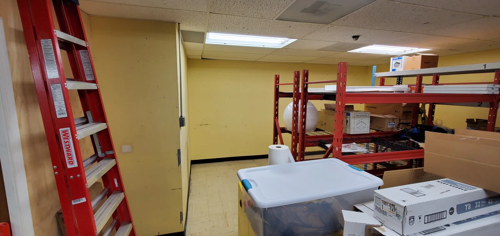
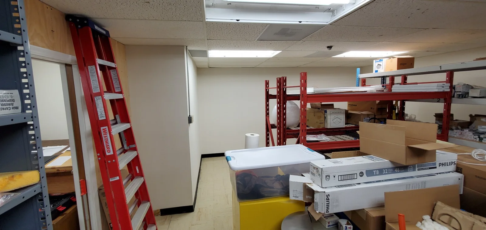

Kitchen Cabinets
Warm Wood to Bright White
A full kitchen refinishing project with a cleaner, brighter finish while preserving the existing cabinet layout.


Real SEACOL work
Explore documented SEACOL transformations by service. Drag every comparison to see the original condition against the completed finish.
Cabinet refinishing
Real SEACOL cabinet projects shown as direct before-and-after comparisons. Drag each slider from side to side.
A full kitchen refinishing project with a cleaner, brighter finish while preserving the existing cabinet layout.
A darker existing kitchen refinished into a lighter, more contemporary cabinet system with a controlled fine finish.


A vanity color transformation that adds stronger contrast against brass fixtures and the patterned room finishes.


Detailed interior
Interior transformations where the finish has to work with trim, built-ins, furniture and the architecture of the room.
A dated multi-color room refined with a dark upper wall and crisp white wainscoting for a more intentional composition.


Natural unfinished cabinetry brought into the room with a clean painted finish and dark hardware.


Exterior & wood restoration
Decks, doors and exposed wood benefit from preparation that respects both appearance and long-term protection.
A faded deck brought back to a warmer, richer finish while preserving the visible character of the wood.


Weathered exterior doors restored to a cleaner, more uniform natural-wood appearance with refreshed surrounding trim.


Commercial painting
Commercial work where uniform coverage, preparation and organized execution matter across a much larger visual field.
A large commercial interior transformed from a light unfinished-looking space into a darker, more cohesive environment.


Preparation & process
Masking, protection, surface correction and controlled application remain part of the SEACOL standard on every project.



Have a project in mind?
Request a Free Estimate